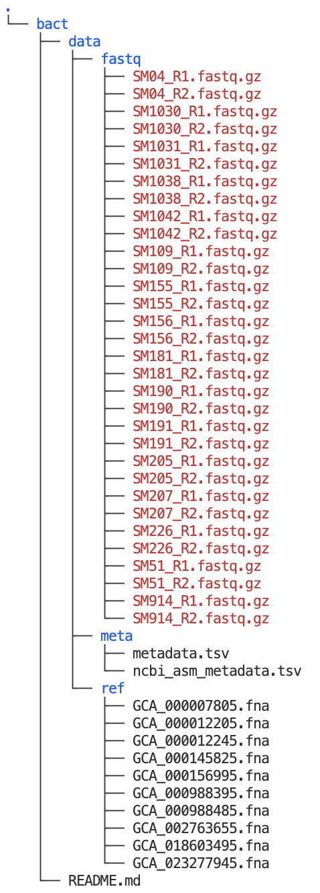

# (Don't run this)
x <- 5
x[1] 5Jelmer Poelstra
February 7, 2024
Many of the things you typically do by pointing and clicking can alternatively be done by typing commands. The Unix shell allows you to interact with computers via commands.
Working effectively on a remote supercomputer tends to require using a command line interface. But there are more reasons to command line computing, such as:
We’re going to focus on the practice of doing command line computing, and not get too bogged down in terminology, but let’s highlight a few interrelated terms you’re likely to run across:
While it might not fly for a computer science class, for day-to-day computing/bioinformatics, you’ll probably hear all these terms used somewhat interchangeably.
We’ll use a Unix shell at OSC inside VS Code. You should have an active VS Code session in the folder /fs/scratch/PAS2250/cabana/<user>, and with an open Terminal — if not, see the instructions right below.
Interactive Apps and then near the bottom of the dropdown menu, click Code Server.PAS2250/fs/scratch/PAS2250/cabana/<user>Number of hours: 10Launch.Runnning, click Connect to VS Code.Terminal => New Terminal. (Or use one of the keyboard shortcuts: Ctrl+` (backtick) or Ctrl+Shift+C.)pwd to check where you are. If you are not in /fs/scratch/PAS2250/cabana/<user> (where <user> is your OSC username), click Open folder... in the Welcome tab, or => File => Open Folder, then type/select /fs/scratch/PAS2250/cabana/<user> and press OK.Inside your terminal, the “prompt” indicates that the shell is ready for a command. What is shown exactly varies across shells and can also be customized, but our prompts at OSC should show the following information:
<username>@<node-name> <working-dir>]$
For example:
[jelmer@p0080 jelmer]$ We type our commands after the dollar sign, and then press Enter to execute the command. When the command has finished executing, we’ll get our prompt back and can type a new command.
date, whoami, pwdThe Unix shell comes with hundreds of “commands”: small programs that perform specific actions. If you’re familiar with R or Python, a Unix command is like an R/Python function.
Let’s start with a few simple commands:
date command prints the current date and time:Wed Feb 7 09:11:51 EST 2024whoami (who-am-i) command prints your username:jelmerpwd (Print Working Directory) command prints the path to the directory you are currently located in:/fs/scratch/PAS2250/cabana/jelmerAll 3 of those commands provided us with some output. That output was printed to screen, which is the default behavior for nearly every Unix command.
pwd, directories are separated by forward slashes /.my_long_filename).cd and command actions & argumentsIn the above three command line expressions:
But many commands perform an action other than providing information. For example, you can use the command cd to Change Directory (i.e. change your working dir). And like many commands that perform an action, cd normally has no output at all.
Let’s use cd to move to another directory by specifying the path to that directory after the cd command:
/fs/scratch/PAS2250/cabana/bactIn more abstract terms, what we did above was to provide cd with an argument, namely the path of the dir to move to. Arguments generally tell commands what file(s) or directory/ies to operate on.
As we’ve seen, then, cd gives no output when it succesfully changed the working directory. But let’s also see what happens when it does not succeed — it gives an error:
bash: cd: /fs/scratch/pas2250: No such file or directoryWe used lowercase in /pas2250/ — this should have been /PAS2250/.
As pointed out above, everything, including paths, is case-sensitive in the Unix shell!
ls and command optionslsThe ls command, short for “list”, will list files and directories:
data README.md(You should still be in /fs/scratch/PAS2250/cabana/bact. If not, cd there first.)
ls output colors (click to expand)
The ls output above does not show the different colors you should see in your shell — the most common ones are:
data and metadata above)README.md above)By default, ls will list files and dirs in your current working dir, and in the way shown above. For which dir ls lists files and dirs can be changed with arguments, and how ls shows the output can be changed with options.
cat and a quick intro to the dataTo find out what data is contained in this dir, let’s take a look at the README.md file.
There are several commands to view the contents of files — the simplest is cat, which will print the entire contents of a file to screen:
# README for /fs/scratch/PAS2250/cabana/bact
This directory contains:
- Illumina FASTQ files for 16 _Pseudomonas syringae pv. syringae_ samples (`data/fastq`)
- 10 _Pseudomonas_ genome assemblies downloaded from NCBI (`data/ref`)
- Metadata on both the focal samples and the downloaded genomes (`data/meta`)This is the dataset we will work with (mostly) tomorrow for our bacterial whole-genome analysis sessions.
In general, whereas arguments tell a command what to operate on, options will modify its behavior. For example, we can call ls with the option -l (a dash followed by a lowercase L):
total 17
drwxr-xr-x 5 jelmer PAS2250 4096 Feb 4 11:46 data
-rw-r--r-- 1 jelmer PAS2250 318 Feb 6 08:57 README.mdNotice that it lists the same items as above, but printed in a different format: one item per line, with additional information such as the date and time each file was last modified, and file sizes in bytes (to the left of the date).
Let’s add another option, -h:
total 17K
drwxr-xr-x 5 jelmer PAS2250 4.0K Feb 4 11:46 data
-rw-r--r-- 1 jelmer PAS2250 318 Feb 6 08:57 README.mdThe only difference is in the format of the column reporting the sizes of the items listed.
We now have “Human-readable filesizes” (hence -h), where sizes on the scale of kilobytes will be shown with Ks, of megabytes with Ms, and of gigabytes with Gs. That can be really useful especially for very large files.
Conveniently, options can be “pasted together” as follows:
Arguments to ls should be dirs or files to operate on. For example, if we wanted to see what’s inside the data dir, instead of inside our working dir, we could type3:
fastq meta refThe data dir appears to contain three (sub)dirs with different kinds of data. We’ll talk in detail about that later, but for now let’s look inside the fastq dir:
SM04_R1.fastq.gz SM1031_R1.fastq.gz SM1042_R1.fastq.gz SM155_R1.fastq.gz SM181_R1.fastq.gz SM191_R1.fastq.gz SM207_R1.fastq.gz SM51_R1.fastq.gz
SM04_R2.fastq.gz SM1031_R2.fastq.gz SM1042_R2.fastq.gz SM155_R2.fastq.gz SM181_R2.fastq.gz SM191_R2.fastq.gz SM207_R2.fastq.gz SM51_R2.fastq.gz
SM1030_R1.fastq.gz SM1038_R1.fastq.gz SM109_R1.fastq.gz SM156_R1.fastq.gz SM190_R1.fastq.gz SM205_R1.fastq.gz SM226_R1.fastq.gz SM914_R1.fastq.gz
SM1030_R2.fastq.gz SM1038_R2.fastq.gz SM109_R2.fastq.gz SM156_R2.fastq.gz SM190_R2.fastq.gz SM205_R2.fastq.gz SM226_R2.fastq.gz SM914_R2.fastq.gzAh, FASTQ files! These contain our sequence data, and we’ll go and explore them in a bit.
We’ll combine options and arguments to take a closer look at our dir with FASTQ files — now the -h option is especially useful and allows us to see that the FASTQ files are roughly around 200 Mb in size:
total 6.1G
-rw-r--r-- 1 jelmer PAS2250 205M Feb 4 11:47 SM04_R1.fastq.gz
-rw-r--r-- 1 jelmer PAS2250 242M Feb 4 11:46 SM04_R2.fastq.gz
-rw-r--r-- 1 jelmer PAS2250 188M Feb 4 11:46 SM1030_R1.fastq.gz
-rw-r--r-- 1 jelmer PAS2250 221M Feb 4 11:46 SM1030_R2.fastq.gz
-rw-r--r-- 1 jelmer PAS2250 187M Feb 4 11:46 SM1031_R1.fastq.gz
-rw-r--r-- 1 jelmer PAS2250 221M Feb 4 11:46 SM1031_R2.fastq.gz
-rw-r--r-- 1 jelmer PAS2250 187M Feb 4 11:46 SM1038_R1.fastq.gz
-rw-r--r-- 1 jelmer PAS2250 224M Feb 4 11:46 SM1038_R2.fastq.gz
# [...output truncated...]List the files in the data/ref dir:
total 60M
-rw-r--r-- 1 jelmer PAS2250 6.4M Feb 4 11:46 GCA_000007805.fna
-rw-r--r-- 1 jelmer PAS2250 6.0M Feb 4 11:46 GCA_000012205.fna
-rw-r--r-- 1 jelmer PAS2250 5.9M Feb 4 11:46 GCA_000012245.fna
-rw-r--r-- 1 jelmer PAS2250 5.7M Feb 4 11:46 GCA_000145825.fna
-rw-r--r-- 1 jelmer PAS2250 5.6M Feb 4 11:46 GCA_000156995.fna
-rw-r--r-- 1 jelmer PAS2250 5.8M Feb 4 11:46 GCA_000988395.fna
-rw-r--r-- 1 jelmer PAS2250 5.9M Feb 4 11:46 GCA_000988485.fna
-rw-r--r-- 1 jelmer PAS2250 6.5M Feb 4 11:46 GCA_002763655.fna
-rw-r--r-- 1 jelmer PAS2250 6.1M Feb 4 11:46 GCA_018603495.fna
-rw-r--r-- 1 jelmer PAS2250 6.0M Feb 4 11:46 GCA_023277945.fnaThe files are round 5-6 Mb in size.
These are FASTA files with nucleotide sequences (hence the extension .fna).
(More specifically, they are genome assembly sequences downloaded from NCBI: the GCA_ prefix indicates that they are from NCBI’s GenBank.)
Command history: If you hit the ⇧ (up arrow) once, you’ll retrieve your most recent command, and if you keep hitting it, you’ll go further back. The ⇩ (down arrow) will go the other way: towards the present.
Your cursor can be anywhere on a line (not just at the end) when you press Enter to execute a command!
Any text that comes after a # is considered a comment instead of code!
# This entire line is a comment - you can run it and nothing will happen
pwd # 'pwd' will be executed but everything after the '#' is ignored/fs/scratch/PAS2250/cabana/bactIf your prompt is “missing”, the shell is still busy executing your command, or you typed an incomplete command. To abort in either of these scenarios, press Ctrl+C and you will get your prompt back.
To simulate a long-running command that we may want to abort, we can use the sleep command, which will make the computer wait for a specified amount of time until giving your prompt back. Run the below command and instead of waiting for the full 60 seconds, press Ctrl + C to get your prompt back sooner!
Or, use Ctrl + C after running this example of an incomplete command (an opening parenthesis ():
A) Move into your personal dir in /fs/scratch/PAS2250/cabana, and then back into the bact dir.
B) Use the command history (up arrow) to repeat the previous exercise without retyping your commands.
Paths with a leading / begin from the computer’s root directory, and are called “absolute” or “full paths”.
(They are equivalent to GPS coordinates for a geographical location, as they work regardless of where you are).
Paths without a leading / begin from your current working directory, and are called “relative paths”.
(These work like directions along the lines of “take the second left:” they depend on your current location.)
~ (a tilde)
This is a shortcut for your Home directory — for example, cd ~ would move you to your Home dir.
. (a single period)
This is a shortcut representing the current working directory. Therefore, ls ./data is functionally the same as ls data.
.. (two periods)
This means the directory “one level up” (towards the computer’s root dir). Use .. to go up in the dir hierarchy in a relative path:
bact databases jelmer mizarra software
bact_results homework jelmer_prep Phytophthora
# (Note: you will see more dirs than this!)This pattern can be continued all the way to the root of the computer, so ../.. means two levels up:
cabana ENT6703All of the above shortcuts (., .., ~) are general shell shortcuts that work with any command that accepts a path/file name.
.. to move into your personal dir and back to bact once again.You are likely familiar with the concept of variables in either the Unix shell, R, or another language.
5= in x=5.echo command, a general command to print text, to print the value of $x (cf. in R).$ prefix to reference (but not to assign) variables in the shell4.Environment variables are pre-existing variables that have been assigned values automatically. Two examples:
/users/PAS0471/jelmerjelmerA) Use the environment variable $USER to list the contents of your personal dir in /fs/ess/PAS2250/cabana. What do you expect to see printed?
You should not get any output, since you didn’t create or copy any files into your personal dir yet.
However, if you get an error along these lines…
bash: cd: /fs/ess/PAS2250/cabana/jelmer: No such file or directory…then the dir you created earlier in the OnDemand’s Files menu does not (exactly) match your user name!
You can try to rename the folder with the mv command or do so in VS Code’s file explorer on the left-hand side. Alternatively, you can just (also) create the correct dir as follows:
And then you can optionally find and remove your other, misnamed dir (you can remove it in the OnDemand File Browser or with the rmdir command).
B) Print “Hello there <your username>” (e.g. “Hello there marcus”) to the screen:
mkdirThe mkdir command creates new directories. For example, to create a bact dir in your personal dir (for tomorrow’s bacterial whole-genome analyses):
Or two directories at once:
Let’s check what we did:
bactscripts workflowOr get a nice overview with the tree command:
.
└── bact
├── scripts
└── workflow
3 directories, 0 filesmkdir (Click to expand)
By default, mkdir does not work recursively: that is, it will refuse to make a dir inside a dir that does not yet exist. And if you try to do so, the resulting error might confuse you:
mkdir: cannot create directory ‘bact/sandbox/20240207’: No such file or directoryWhy won’t you do your job,
mkdir!? 😡
Instead, we need to use the -p option to mkdir:
The -p option also changes mkdir’s behavior when you try to create a dir that already exists. Without -p that will result in an error, and with -p it doesn’t complain about that (and it won’t recreate/overwrite the dir either).
cpAbove, you created your own directory — now, let’s get you a copy of the data we saw in the bact dir.
The cp command copies files and/or directories from one location to another. It has two required arguments: what you want to copy (the source), and where you want to copy it to (the destination). So, we can summarize its basic syntax as cp <source> <destination>.
cp is not recursive by default, so if you want to copy a directory and all of its contents, we need to use its -r option We’ll use that option to copy the dir with FASTQ files:
‘../bact’ -> ‘bact’
‘../bact/README.md’ -> ‘bact/README.md’
‘../bact/data’ -> ‘bact/data’
‘../bact/data/meta’ -> ‘bact/data/meta’
‘../bact/data/meta/ncbi_asm_metadata.tsv’ -> ‘bact/data/meta/ncbi_asm_metadata.tsv’
‘../bact/data/meta/metadata.tsv’ -> ‘bact/data/meta/metadata.tsv’
‘../bact/data/ref’ -> ‘bact/data/ref’
‘../bact/data/ref/GCA_000145825.fna’ -> ‘bact/data/ref/GCA_000145825.fna’
‘../bact/data/ref/GCA_000156995.fna’ -> ‘bact/data/ref/GCA_000156995.fna’
# [...output truncated...]-v option, short for verbose, to make cp tell us what it did
Let’s get an overview with tree again:

Shell wildcard expansion is a very useful technique to select files. Selecting files with wildcard expansion is called globbing. Wildcards are symbols that have a special meaning.
In globbing, the * wildcard matches any number of any character, including nothing.
The example below will match any files that contain the string “_R1”:
data/fastq/SM04_R1.fastq.gz data/fastq/SM1038_R1.fastq.gz data/fastq/SM155_R1.fastq.gz data/fastq/SM190_R1.fastq.gz data/fastq/SM207_R1.fastq.gz data/fastq/SM914_R1.fastq.gz
data/fastq/SM1030_R1.fastq.gz data/fastq/SM1042_R1.fastq.gz data/fastq/SM156_R1.fastq.gz data/fastq/SM191_R1.fastq.gz data/fastq/SM226_R1.fastq.gz
data/fastq/SM1031_R1.fastq.gz data/fastq/SM109_R1.fastq.gz data/fastq/SM181_R1.fastq.gz data/fastq/SM205_R1.fastq.gz data/fastq/SM51_R1.fastq.gzSome more file matching examples with * — if you would be in your data/fastq dir, then:
| Pattern | Matches files whose names… |
|---|---|
* |
Contain anything (matches all files) 5 |
*fastq.gz |
End in “.fastq.gz” |
SM1* |
Start with “SM1” |
*_R1* |
Contain “_R1” |
*What pattern would you use if you wanted to select FASTQ files for the 4 samples (8 files) whose IDs end in a 1 (e.g. SM1031)?
We’ll need a * on either side of our pattern, because the file names neither start not end with the pattern:
data/fastq/SM1031_R1.fastq.gz data/fastq/SM181_R1.fastq.gz data/fastq/SM191_R1.fastq.gz data/fastq/SM51_R1.fastq.gz
data/fastq/SM1031_R2.fastq.gz data/fastq/SM181_R2.fastq.gz data/fastq/SM191_R2.fastq.gz data/fastq/SM51_R2.fastq.gzLoops are a universal element of programming languages, and are used to repeat operations. Here, we’ll only cover the most common type of loop: the for loop.
A for loop iterates over a collection, such as a list of files, and allows you to perform one or more actions for each element in the collection. In the example below, our “collection” is just a short list of numbers (1, 2, and 3):
for a_number in 1 2 3; do
echo "In this iteration of the loop, the number is $a_number"
echo "--------"
doneIn this iteration of the loop, the number is 1
--------
In this iteration of the loop, the number is 2
--------
In this iteration of the loop, the number is 3
--------The indented lines between do and done contain the code that is being executed as many times as there are items in the collection: in this case 3 times, as you can tell from the output above.
A very useful strategy is to loop over files with globbing, for example:
for fastq_file in data/fastq/*fastq.gz; do
echo "Running an analysis for file $fastq_file"...
# Additional commands to process the FASTQ file
doneRunning an analysis for file data/fastq/SM04_R1.fastq.gz...
Running an analysis for file data/fastq/SM04_R2.fastq.gz...
Running an analysis for file data/fastq/SM1030_R1.fastq.gz...
Running an analysis for file data/fastq/SM1030_R2.fastq.gz...
Running an analysis for file data/fastq/SM1031_R1.fastq.gz...
#[...output truncated...]for loop syntax (Click to expand)
On the first and last, unindented lines, for loops contain the following mandatory keywords:
| Keyword | Purpose |
|---|---|
for |
After for, we set the variable name (an arbitrary name; above we used a_number) |
in |
After in, we specify the collection (list of items) we are looping over |
do |
After do, we have one ore more lines specifying what to do with each item |
done |
Tells the shell we are done with the loop |
Create a loop that will print:
morel is an Ohio mushroom
destroying_angel is an Ohio mushroom
eyelash_cup is an Ohio mushroomSee the following two reference pages on this website:
Command-line Interface (CLI), as opposed to Graphical User Interface (GUI)↩︎
It’s certainly possible to have spaces in file names, but it’s a bad idea, and will get you into trouble sooner or later.↩︎
Beginners will often cd into a dir just to list its contents, but the method shown below is much quicker.↩︎
Anytime you see a word/string that starts with a $ in the shell, you can safely assume that it is a variable.↩︎
However, it will not match so-called “hidden files” whose names start with a ..↩︎